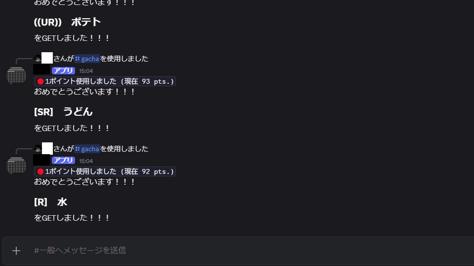
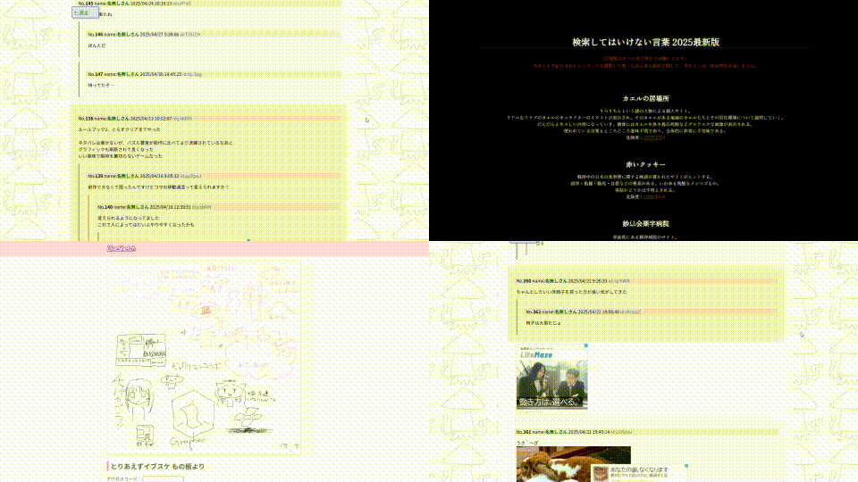

works


Discord ガチャbot
チャットアプリ「Discord」の、実用というよりはネタ向けに作ったbotプログラムです。コマンドを送ることで、データベースに入っている文の中からランダムに、ガチャのように排出します。
Northflankを使い常時稼働できるようにしました。
データベースはあえてtxtで記述されており、プログラミングに触れたことがない人でも簡単に書きかえられるようにしてあります。
GitHub上ではご飯の名前を排出するbotとしてまとめてあります。

もの板とその周辺のインターネット
大学の卒業制作にて制作しました。パラレルワールドに存在する匿名掲示板という設定です。掲示板だけでなく、そこから飛べるいくつかのサイトも作りました。
疑似的な掲示板であり、書き込みの機能はなく、見て楽しむものになっています。
事情により公開が難しいためスクリーンショットのみになります。
書き込みをスプレッドシートにまとめcsvに変換したものを掲示板の見た目のhtmlに変換するプログラムを作るなどし、効率化を図りました。
